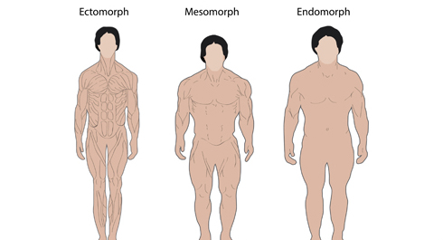

Если честно, то одна из немногих вещей в мире, которая нас поражает больше, чем количество мусорной информации в интернете, это количество наивных людей, которые ей верят на слово. В сегодняшнем инфопосте речь пойдет об очередном мифе, который, благодаря интернету, распространился по всей планете и глубоко засел в подкорку начинающих любителей фитнеса. Если сегодня не первый день, когда вы открыли интернет и решили привести себя в форму, то вы наверняка уже знаете о том, что существует три типа телосложений: эктоморф, мезоморф и эндоморф. Так вот, на самом деле их не существует.
Проблема определений
По сути — эктоморф, мезоморф и эндоморф — это просто экзотическое название привычных нам: тощий, средний, жирный, которое НЕ ИМЕЕТ под собой научного обоснования. Не верите? Давайте глянем определения:
<
Классификация:
Эктоморф - как правило высокий, худой, минимум мышц, плоская грудь, и так далее.
Мезоморф - более атлетичный тип, широкие плечи и грудная клетка, мускулистые руки и ноги, количество подкожного жира невелико.
Эндоморф - характеризуется шарообразными формами, как правило, круглая голова, большой живот, широкая грудная клетка и туловище, низкий рост, с большим количеством жира на плечах и бедрах, но тонкие запястья и лодыжки.
Мезоморф - более атлетичный тип, широкие плечи и грудная клетка, мускулистые руки и ноги, количество подкожного жира невелико.
Эндоморф - характеризуется шарообразными формами, как правило, круглая голова, большой живот, широкая грудная клетка и туловище, низкий рост, с большим количеством жира на плечах и бедрах, но тонкие запястья и лодыжки.
Занятно складывается, не правда ли? Кому же это понадобилось извращаться?
Авторство этой классификации принадлежит Уильяму Шелдону, который занимался изучением человеческого тела, пытаясь найти какие-либо закономерности. Но он не изучал биологию или анатомию, вовсе нет, он был психологом. И поэтому его классификация людей на три основные категории — эктоморф, мезоморф, эндоморф, это не более чем просто разделение людей по внешнему виду. Которая, если говорить откровенно, вообще не несет никакого особого смысла. Зато создает кучу проблем для особо впечатлительных людей или новичков, о чем мы сейчас и поговорим.
Помимо того, что интернет завален ссылками на эту типологию, он также завален специальными тренировочными программами для эктоморфов и мезоморфов, специальными планами питания для хардгейнеров (сленговое название эктоморфов среди поклонников бодибилдинга) и прочей ерундой. Остается только гадать сколько человек думает, что они эктоморфы-хардгейнеры и им нереально сложно набрать массу, когда по факту они недостаточно много едят и даже не считают калории, или сколько человек думает, что они эндоморфы и склонны к полноте, хотя понятия не имеют, сколько углеводов и жиров потребляют каждый день и что у них творится с диетой. А между тем, все предельно просто — настолько, что мы уже разбирали этот вопрос ранее, в инфопосте про баланс калорий. И абсолютно неважно, худой ты или средний, или жирный — принципы питания и тренировок (именно ПРИНЦИПЫ, а не конкретные подходы, программы и рационы) для всех одинаковые. Это как физика. Гравитация действует на всех, просто на жирных она действует сильнее, чем на худых (пропорционально разнице в весе), но она действует на всех и всегда!
Таким образом разделение людей на: худой (эктоморф), средний (мезоморф) и жирный (эндоморф) не дает ровным счетом никакой полезной информации, когда дело касается изменения своего внешнего вида. Но есть также и определенное количество ОБЪЕКТИВНЫХ факторов, которые влияют на то, как вы выглядите и как тяжело вам будет изменить свой внешний вид.
Первый, который приходит на ум — длина мышц, длина сухожилий и места их крепления. У одних людей — длинные мышцы и короткие сухожилия, у других — наоборот. И первым будет гораздо легче тренировать мышцы, да и эстетически они будут выглядеть лучше.
Второй, который приходит на ум — это вообще длина рук, ног, туловища и т.д. Все тренировки — это физика: чем короче рычаг, тем, при прочих равных, большую нагрузку на него можно дать. А ведь прогресс в величине нагрузки - это один из вариантов создания стрессовой ситуации для организма, к которой он вынужден будет адаптироваться.
Третий, который приходит на ум — это рост и вес. Опять же, 80 кг на 180 см и 80 кг на 170 см будут выглядеть сильно по-разному. Но это никак не будет делать человека эктоморфом, потому что данная категоризация - это СЛЕДСТВИЕ, а не причина. И, кстати можете спокойно послать куда подальше того, кто в следующий раз скажет вам, что генетика не играет роли. Она играет роль, и ещё какую.
Выше мы прикинули всего три параметра, которые ДЕЙСТВИТЕЛЬНО различают людей, но таких параметров на самом деле больше. И именно отталкиваясь от таких параметров, нужно строить свои тренировки, а вовсе не от непонятной классификации, придуманной психологом и растиражированной последователями культов бодибилдинга и фитнеса.
P.S. Уильям Шелдон является далеко не единственным примером того, как незнание фундаментальных законов природы, в совокупности с чрезмерной любовью к статистике, приводит к совершенно неправильным выводам. Нельзя не вспомнить француза Поля Брока, занимавшегося исследованием морфологических различий черепных коробок разных людей, которые, по его мнению, указывали на врожденные способности. Он даже разработал детальную классификацию человечества на основе этих отличий, чем взбудоражил все научное сообщество, а среди простых людей ввел временную моду на измерение своих черепов.
P.P.S.Если что, то разделение девушек по типам фигур (яблоко, груша, треугольник, прямоугольник, перевернутый треугольник) - это примерно из той же оперы...